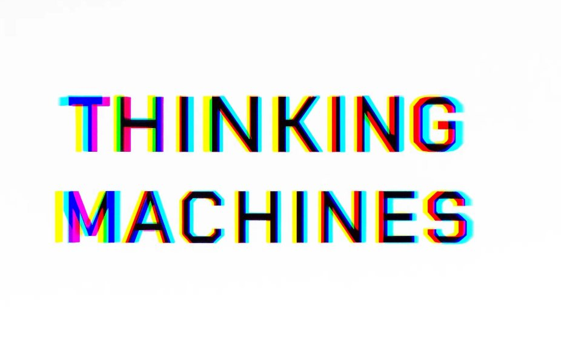
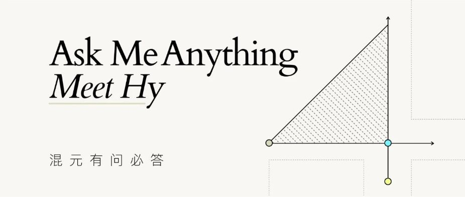
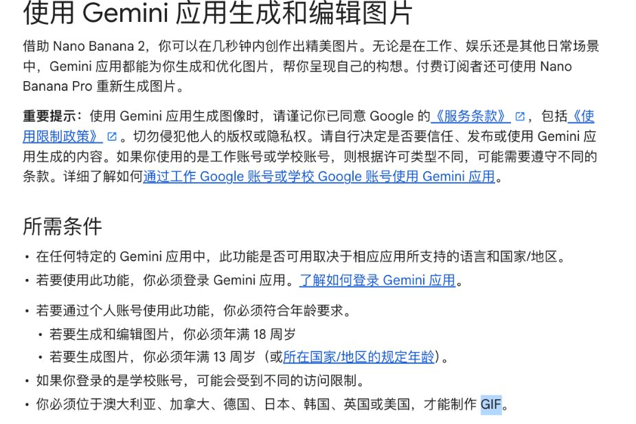
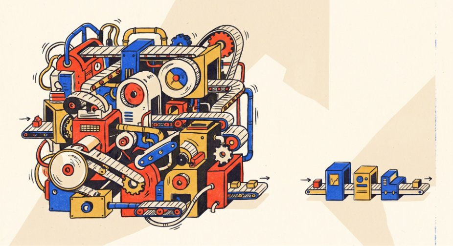
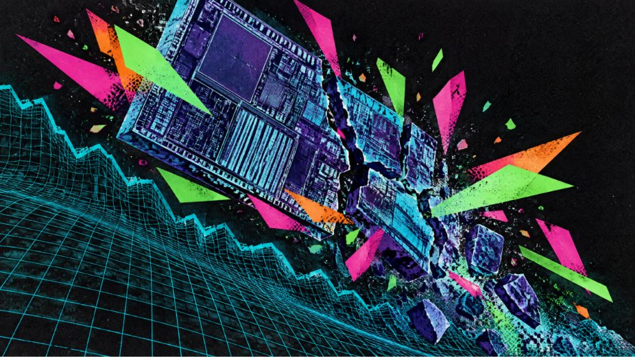

Anthropic · 与 Claude 完成黎曼猜想证明并发布 Lean 形式化代码

Thinking Machines · Inkling 2 Mini 开源权重模型
腾讯混元 · Hy4 Reddit AMA 谈路线与更大规模模型Agent 与产品

Google · Gemini 上线 GIF 生成功能
模型发布
Thinking Machines · Inkling 2 Mini 开源权重模型

字节跳动 · 称多数 AI 训练阶段并非必要并以开源模型验证
公司动态
腾讯混元 · Hy4 Reddit AMA 谈路线与更大规模模型
OpenAI · 公布反蒸馏防护进展
